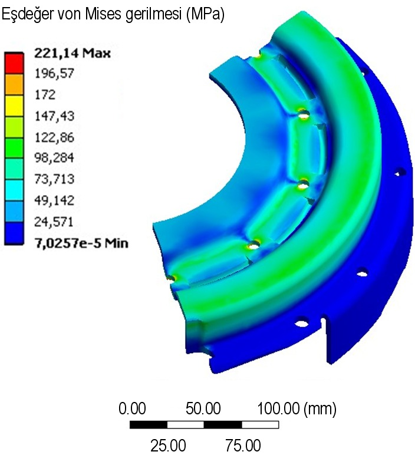
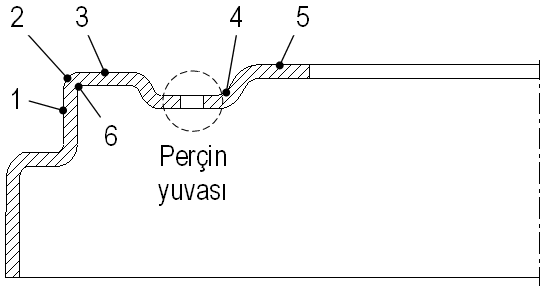
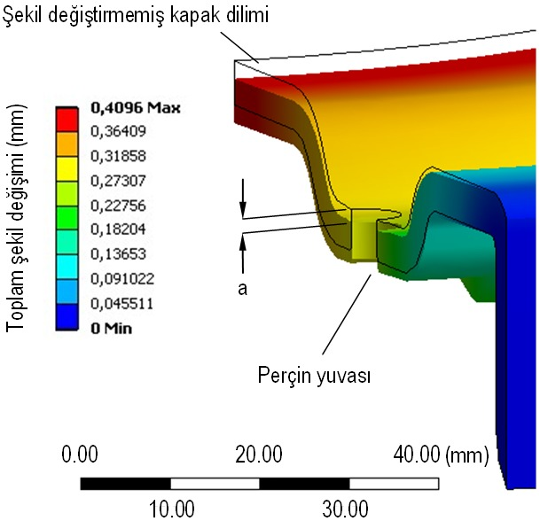
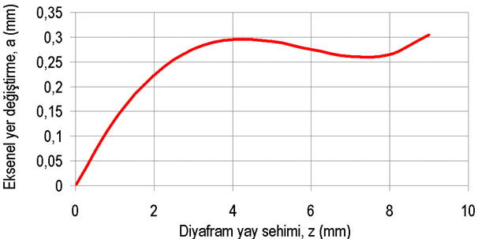

|
4. Analiz sonuçlarý ve deðerlendirme
Belirlenen maksimum perçin yüküne göre yapýlan gerilme analizi sonucunda kapak diliminde elde edilen von Mises gerilmesi daðýlýmý Þekil 16'da görülmektedir. Kapak kesitini oluþturan ve Þekil 17'de görülen yüzeylerde ortaya çýkan maksimum gerilme deðerleri Tablo 4'te verilmiþtir. Bu gerilmeler, kesitin numaralandýrýlmýþ köþelerinde çevre boyunca ortaya çýkan maksimum deðerlerdir.

Þekil 16. Kapak diliminde von Mises gerilme daðýlýmý

Þekil 17. Kapak kesit kademelerinde gerilme ölçüm yüzeyleri
Parça genelinde von Mises gerilmesi = 0-195 MPa aralýðýnda deðiþmektedir. Ýstisna olarak, perçin yuvasý içindeki çok sýnýrlý bir bölgede, maks= 221,14 MPa deðerine kadar çýkabildiði belirlenmiþtir. Bu, iþlem görmemiþ sac malzemenin akma sýnýrýnýn yaklaþýk %85'ine denk düþmektedir. Kavrama yayýnýn gerçek çalýþma bölgesinde analiz tekrarlandýðýnda, Þekil 13'e göre z= 6 mm sehim ve F= 19050 N yay kuvveti için maks= 206,5 MPa; z= 8 mm ve F= 18383 N için maks= 199,28 MPa deðerleri elde edilmiþtir. Perçin yuvalarý aðzýnda oluþturulacak yuvarlatmalar yardýmýyla maks deðerinin %10'a kadar azaltýlabildiði de tespit edilmiþtir. Tüm bunlara ek olarak imalat sýrasýnda, soðuk þekillendirme nedeniyle malzemenin akma sýnýrýnda belirli ölçüde bir artýþ söz konusu olacaðýndan parçanýn, öngörülen yük altýnda elastik bölgede ve emniyetli olarak çalýþacaðý söylenebilir.
Tablo 4. Kapak kesit kademelerinde ölçülen maksimum gerilmeler
Ölçüm yüzeyi |
Maksimum gerilme (MPa) |
1 |
101 |
2 |
89 |
3 |
110 |
4 |
97 |
5 |
49 |
6 |
195 |
Maksimum perçin kuvveti için gerçekleþtirilen analiz sonucunda kapakta ortaya çýkan en yüksek elastik þekil deðiþimi, vites kutusu giriþ mili eksenine en yakýn çapta, 0,41 mm olarak ölçülmüþtür. Kapak esnemesinin ölçümünde referans olarak alýnan perçin yuvalarýnda, Þekil 18'de görülen a= 0,29 mm'lik maksimum þekil deðiþimine rastlanmýþtýr. Bu deðer, parçanýn tasarým aþamasýnda öngörülen a= 0,3 mm sýnýr deðerinin altýnda kalmaktadýr. Kapaðýn gerçek çalýþma bölgesi olan z= 6-8 mm'lik yay sehimi aralýðýnda ise a= 0,26-0,28 mm ile sýnýrlanmaktadýr. Perçin yuvalarýnda ölçülen eksenel yer deðiþiminin, diyafram yay sehimine baðlý deðiþimi Þekil 19'da verilmiþtir.

Þekil 18. Perçin yuvasýnýn eksenel þekil deðiþimi

Þekil 19. Perçin yuvasýndaki eksenel þekil deðiþiminin
yay sehimine baðlý deðiþimi
5. Sonuç
Tasarým aþamasýndaki bir taþýt kavramasýnda kullanýlacak kapaðýn yapýsal analizi gerçekleþtirilmiþtir. Bu amaçla önce, diyafram yayýn pedal kuvveti altýndaki elastik þekil deðiþimi, ANSYS® Workbench V11.0 sonlu elemanlar paketi yardýmýyla simüle edilmiþ, yay ve kapak arasýndaki baðlantýyý saðlayan perçinlerde iþletim sýrasýnda ortaya çýkacak kuvvetler belirlenmiþtir. Elde edilen sonuçlarýn, yaya uygulanan yükleme testlerinden saðlanan kuvvet karakteristiðiye uyumlu olduðu görülmüþtür. Bu þekilde, sonlu elemanlar analizi yardýmýyla bulunan sonuçlarýn gerçeðe yakýnlýðý, dolayýsýyla kullanýlan sýnýr koþullarýnýn uygunluðu deðerlendirilmiþtir. Fonksiyona uygunluðu araþtýrýlacak parça olan kavrama kapaðý, CATIA® V5R15 ticari paket yazýlýmý kullanýlarak, bilgisayar ortamýnda modellenmiþ, yay analizinden elde edilen perçin kuvvetlerinin modelde oluþturduðu gerilme ve elastik þekil deðiþimleri sonlu elemanlar yöntemini esas alan ANSYS® Workbench V11.0 paketi yardýmýyla incelenmiþtir. Çelik sacdan, birden fazla kademede soðuk þekillendirilerek üretilmesi öngörülen kavrama kapaðýnýn yapýsal analizinde, iþlem görmemiþ sac malzemenin mekanik özellikleri kullanýlmýþtýr. Böylelikle, soðuk þekil deðiþtirme sonucunda malzemede ortaya çýkacak pekleþme etkileri ihmal edilmiþtir. Pekleþmenin parça bünyesinde meydana getireceði yüksek rijitliðin korunabilmesi için herhangi bir ýsýl iþlem öngörülmemektedir. Bu nedenle gerçek parçada iþletim sýrasýnda oluþacak esneme miktarýnýn, analiz sonucunda elde edilen deðerlerin altýnda çýkmasý beklenmelidir. Üretici tarafýndan öngörülen maksimum elastik þekil deðiþimi kriteri ýþýðýnda, kavrama kapaðýnýn fonksiyon açýsýndan konstrüksiyona uygun olduðu sonucuna varýlmýþtýr.
Yapýlan bu çalýþma ile tasarým sürecinin ilk basamaklarýnda, birden fazla parçadan oluþan bir konstrüksiyonda uygulanmasý düþünülen bir yapý elemanýnýn fonksiyona uygunluðu hakkýnda ön deðerlendirme yapýlmýþtýr. Bunun için sistemin tamamý yerine, konstrüktif açýdan aktif rol oynayan iki elemanýn yapýsal sonlu elemanlar analizi, söz konusu parçalar sistemden izole edilerek gerçekleþtirilmiþtir. Uygulanan bu yaklaþýmla, problem önemli ölçüde basitleþtirilmekte ve prototip aþamasý öncesinde, makine elemanlarýnýn konstrüktif yeterliliði hakkýnda fikir edinilebilmektedir. Tasarýmdan kaynaklanan herhangi bir uygunsuzluðun bu aþamada tespit edilmesi durumunda, prototip oluþturma iþlemine geçilmeden parçanýn yapýsýna müdahale etmek mümkündür. Böylelikle imalatý özel aparatlar gerektiren kavrama kapaðý ve benzeri makine parçalarýnýn tasarým sürecinde, prototip ve test maliyeti önemli ölçüde azaltýlmakta, zamandan tasarruf edilmektedir.
Teþekkür
Yazarlar, saðladýðý test olanaklarýndan dolayý Dönmez Debriyaj Sanayi ve Ticaret A.Þ.'ye ve çalýþma kapsamýnda sunduðu lisanslý yazýlým olanaðýndan dolayý Ege Endüstri ve Ticaret A.Þ'ye teþekkür eder.
Kaynaklar
- Kuralay NS, "Motorlu Taþýtlar; Temel ve Tasarým Esaslarý, Yapý Elemanlarý", Cilt 1; Tahrik ve Sürüþ Sistemleri, TMMOB Makina Mühendisleri Odasý, Yayýn No: MMO/2008/484, Ýzmir, 2008, s. 56-65
- Demirsoy M, "Motorlu Araçlar", Cilt 1, Birsen Yayýnevi, Ýstanbul, 2005, s. 1-114
- Sachs Technisches Training, Nkw-Antriebsstrang und Fahrwerk, Werkstatthinweise zur Funktion und Schadensbefundung, S 7 290 0500 04, ZF Trading GmbH, Schweinfurt, s. 4
- Gerschler H, (Studiendirektor), "Fachkunde Kraftfahrzeugtechnik", Verlag Europa-Lehrmittel, Wuppertal, 1980, s. 295
- Lingaiah K, "Machine Design Databook", 2nd ed., McGraw-Hill Companies, Inc., New York, 2003, s. 20.6
- Shigley JE, Mischke C, "Standard Handbook of Machine Design", McGraw-Hill, San Francisco, 1996, s. 24.40-41
- Rende H, "Makina Elemanlarý", Cilt 1, Seç Yayýn Daðýtým, Ýstanbul, 1996, s.5-34
- Topçu M, Taþgetiren S, "Mühendisler için Sonlu Elemanlar Metodu", Pamukkale Üniversitesi Mühendislik Fakültesi Ders Kitaplarý, Yayýn No: 007, Mühendislik Fakültesi Matbaasý, Denizli, 1998, s. 7-18
- Chandrupatla TR, Belegundu AD, "Introduction to Finite Elements in Engineering", Prentice-Hall, Inc., New Jersey, 2002, s. 194
- ANSYS Theory Reference, ANSYS Release 10.0, ANSYS, Inc.; 2005
- Yüksel M, "Malzeme Bilimleri Serisi-Cilt 1: Malzeme Bilgisi", TMMOB Makina Mühendisleri Odasý, Yayýn No: MMO/2003/271/2, Ankara, 2003, s. 360
- Schey JA, "Introduction to Manufacturing Processes", McGraw-Hill Companies, Inc., New York, 2000, s. 263
- Topaç MM, "Karbonlu Çeliklerde Derin Çekmeye Etki Eden Faktörlerin Ýncelenmesi", Yüksek Lisans Tezi, Dokuz Eylül Üniversitesi Fen Bilimleri Enstitüsü, Ýzmir, Eylül 2003, Yükseköðretim Kurulu Tez Merkezi Tez No: 138860, s. 99-184
|